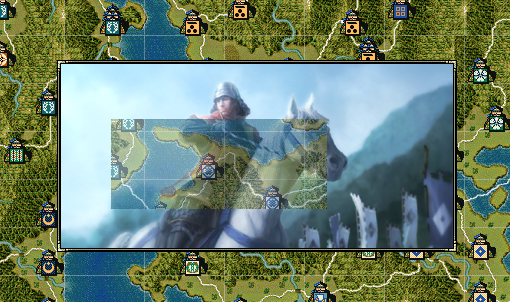
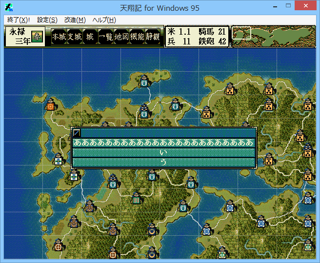
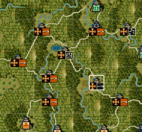
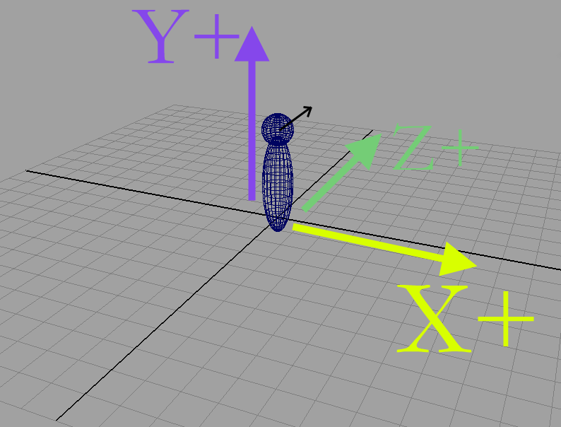

という条件が加えられた。
ここでは、「軍師とは何か？ どのような時、どのような人物が軍師となりえるか？」を再定義可能である。
int カスタム::On_カスタム条件(string 条件名, カスタム条件パラメタ型 パラメタ) {
if ( 条件名 == "AS条件::軍師武将番号" ) {
return 100; // 武将番号100番 (武将番号【配列用】が99番の人が、いつも軍師。どこの国所属でも無関係
}
// 変更しない場合-1
return -1;
}
int カスタム::On_カスタム条件(string 条件名, カスタム条件パラメタ型 パラメタ) {
// 武田信玄が軍団長のところでは、その軍団に武田信繁が居るならば、その軍団の軍師は武田信繁となる。
if ( 条件名 == "AS条件::軍師武将番号" ) {
if ( パラメタ.整数2 == 0xFFFF ) { // 現軍師武将番号 0xFFFFだと該当の軍団には軍師がいない。
}
int iGundanID = パラメタ.整数1 -1; // 指定の軍団番号【配】(指定の軍団場号)
int iBushouID = パラメタ.整数2 -1; // 現軍師武将番号【配】(変化させなければ、その値となるということ)
if ( 0 <= iGundanID && iGundanID < 最大数::軍団情報::配列数 ) {
// 軍団のリーダーを求める
int iLeaderBushouID = p軍団情報[iGundanID].軍団長【武将番号】-1;
// ちゃんとリーダーがいる。
if ( 0 <= iLeaderBushouID && iLeaderBushouID < 最大数::武将情報::配列数 ) {
// 現在要求されている軍団のリーダーは武田信玄
if ( p武将戸籍情報[iLeaderBushouID].顔番号 == 顔番号::武田晴信 ) { // 顔番号19=武田信玄
int iTargetID = Get_武将番号【配列用】(顔番号::武田信繁); // 武田信繁は居るか。
if ( 0 <= iTargetID && iTargetID < 最大数::武将情報::配列数 ) {
// この時、武田信玄と武田信繁が同じ軍団に所属してるか。
if ( p武将情報[iLeaderBushouID].所属軍団【軍団番号】 == p武将情報[iTargetID].所属軍団【軍団番号】) {
// 武田信繁が軍師として助言する
return iTargetID+1; // 武将番号【配】列用番号→武将番号にした上で返す。
}
}
}
}
}
}
// 変更しない場合-1
return -1;
}
天翔記では軍師とは、「各軍団」に最大１人存在する。
そこで、とある指定の軍団の軍師武将を求める関数が追加された。
結果の値が0xFFFFであれば、該当の軍団に軍師は居ない。
// 現在ターンがまわっている軍団の軍師武将番号を得る。
int iGundanID = pターン情報.現在のターン【軍団番号】-1;
if ( 0 <= iGundanID && iGundanID < 最大数::軍団情報::配列数 ) {
int iGunshiBushouID = Get_軍師武将番号【配列用】(iGundanID);
if ( 0 <= iGunshiBushouID && iGunshiBushouID < 最大数::武将情報::配列数 ) {
デバッグ出力 << "軍師は"+Get_名字(iGunshiBushouID)+Get_名前(iGunshiBushouID)+"です。" << endl;
} else {
デバッグ出力 << "指定の軍団に軍師は居ない。";
}
}
をというか数を追加。
とある城の「城称」を得る関数である。
for ( int iCastleID = 0; iCastleID < 最大数::城情報::配列数; iCastleID++) {
デバッグ出力 << Get_城名(iCastleID)+Get_城称(iCastleID) << endl;
}
戦場において、武将が「混乱」や「大混乱」しているかどうか判定する関数が追加された。
int iBushouID = 100; // 何らかの判定などで、対象の武将の武将番号(配列用)を求めてきて…
if ( Is_武将混乱(iBushouID) ) {
// 武将が通常混乱している時の処理はここ。大混乱は含まれない。
}
if ( Is_武将大混乱(iBushouID) ) {
// 武将が大混乱している時の処理はここ。
}
会話用吹き出しメッセージを更新するための「構文糖」関数が追加された。
これにより、ver 2.3.7.3でのソースは以下のように、より直感に近い形で記述することが可能となった。
void カスタム::On_プレイヤ担当ターン《メイン画面》() {
// 左上、開いて、閉じる
噴出ダイアログ《通常・左上》開始(100, "ああ\x0Aマイクのテストテスト" );
噴出ダイアログ《通常・左上》終了();
// 右下、開いて、閉じる
噴出ダイアログ《通常・右下》開始(102, "ああ、眠いなぁ～" );
噴出ダイアログ《通常・右下》終了();
噴出ダイアログ《通常・左上》開始(100, "え～本日の～" );
// 左上ひらいたままで… 右が連続メッセージ
噴出ダイアログ《通常・右下》開始(102, "うっせーぞっｐ!!" );
噴出ダイアログ《通常・右下》更新(102, "返れ!!" );
噴出ダイアログ《通常・右下》更新(102, "いや、帰れ!!" );
// 右下も開いたままで… ダイアログで問いあわせ
int 答え = 実行／取消ダイアログ表示("帰りますか？");
if ( 答え ) {
噴出ダイアログ《通常・右下》更新(102, "わかったようだな" );
} else {
噴出ダイアログ《通常・右下》更新(102, "いいから帰れ!!" );
}
噴出ダイアログ《通常・左上》更新(100, "さて、\x0A雪も降ってるし帰るか。" );
噴出ダイアログ《通常・左上》終了();
噴出ダイアログ《通常・右下》更新(102, "やっと帰ったか。" );
噴出ダイアログ《通常・右下》終了();
}
任意のタイミングで、新たな会話用吹き出しメッセージを出す関数が追加された。
開始した噴出ダイアログは必ず最終的には閉じなければならない!!
しかし、いつ会話の中のどのタイミングで閉じるのかは自由である。
void カスタム::On_プレイヤ担当ターン《メイン画面》() {
// 左上、開いて、閉じる
噴出ダイアログ《通常・左上》開始(100, "ああ\x0Aマイクのテストテスト" );
噴出ダイアログ《通常・左上》終了();
// 右下、開いて、閉じる
噴出ダイアログ《通常・右下》開始(102, "ああ、眠いなぁ～" );
噴出ダイアログ《通常・右下》終了();
噴出ダイアログ《通常・左上》開始(100, "え～本日の～" );
// 左上ひらいたままで… 右が連続メッセージ
噴出ダイアログ《通常・右下》開始(102, "うっせーぞっｐ!!" );
噴出ダイアログ《通常・右下》終了();
噴出ダイアログ《通常・右下》開始(102, "返れ!!" );
噴出ダイアログ《通常・右下》終了();
噴出ダイアログ《通常・右下》開始(102, "いや、帰れ!!" );
// 右下も開いたままで… ダイアログで問いあわせ
int 答え = 実行／取消ダイアログ表示("帰りますか？");
// ダイアログの返答を待ってから、右下のメッセージを更新するため閉じる。
噴出ダイアログ《通常・右下》終了();
if ( 答え ) {
噴出ダイアログ《通常・右下》開始(102, "わかったようだな" );
} else {
噴出ダイアログ《通常・右下》開始(102, "いいから帰れ!!" );
}
// ずっと開いてた左上メッセージを更新するため閉じる。
噴出ダイアログ《通常・左上》終了();
噴出ダイアログ《通常・左上》開始(100, "さて、\x0A雪も降ってるし帰るか。" );
噴出ダイアログ《通常・左上》終了();
噴出ダイアログ《通常・右下》終了();
噴出ダイアログ《通常・右下》開始(102, "やっと帰ったか。" );
噴出ダイアログ《通常・右下》終了();
}
メイン画面中だけではなく、戦争中も同様に機能する。
void カスタム::On_ターン変更《攻城中画面》(int ターン数) {
if ( Is_野戦中() && 1 <= 残りターン数 && 残りターン数 < 30 ) {
if ( Get_天気() == 天気::雨 ) { // 前のターンが雨だった。まだこれからのターンがどうなるかは不明。
噴出ダイアログ《通常・左上》開始(100, "さて、\x0A雨降ったしもう帰るか。" );
噴出ダイアログ《通常・右下》開始(102, "じゃ、俺も帰ろ!!" );
噴出ダイアログ《通常・左上》終了();
噴出ダイアログ《通常・右下》終了();
}
}
}
という関数を追加。
シナリオ選択時の大名選択画面や、あるいは実際のプレイ時など、
「シナリオ番号」が定まっている時に、その番号が返ってくる。
シナリオ番号は、１番～６番で、シナリオ選択メニューの順番通り。
// 現在実行中のシナリオ番号を得る。
int iシナリオ番号 = Get_現在のシナリオ番号();
if ( iシナリオ番号 == 3 ) {
デバッグ出力 << Get_シナリオ名(iシナリオ番号) << endl;
}
という関数を追加。
TSMod.ini の設定項目の値を、ScenarioModから得ることが可能。
TSModEx.iniに記載した内容も含まれる。
値は、天翔記起動時にTSModが処理したものを取得することとなる。
設定していない項目(コメントアウトした項目など)は、「-0xFFFF」という独特な値が返ってくる。
// TSMod.iniの「もしも…すべての武将が歳を取っても才能が減衰しない」の設定値を得る。
int iflagValue = Get_ＴＳＭＯＤＩＮＩ設定("all_bushou_no_decline_talent_param");
if ( iflagValue == 1 ) {
// ～
}
ScenarioModのイベントハンドラ名や引数が数点変化しました。
シナリオタイトル名や、シナリオ説明文の変更方法が、全然異なるものへと変わりました。
On_シナリオメニュー表示直前()
というイベントハンドラで変更するようになりました。
On_シナリオ説明表示直前(int シナリオ番号)
というイベントハンドラで変更するようになりました。
どのように編集すれば良いかは簡単ですので、
ソースの例題を見れば見様見真似でわかると思います。
画像ダイアログ表示の関数が追加された。
画像ダイアログ表示("picture/abc.bmp");
画像ダイアログ表示("picture/abc.png");
// Ｘ軸は中央に表示するが、Ｙは上から100ピクセルのところに表示する。
画像ダイアログ表示("picture/abc.bmp", -1, 100);
画像ダイアログ表示("picture/abc.bmp", -1, -1, 画像ダイアログ::手動終了);
画像ダイアログ表示("picture/abc.bmp", 100, 200, 6000);
あくまでも画像を表示するだけなので、枠は画像の方で用意する必要がある。
画像を縦横を「４ピクセルの倍数」とするのが良い。
そうすることで、以下の枠画像を切り張りして、上手く枠を当てはめることが出来るだろう。
png画像は「透明」が入っていても問題はない。完全な透明でなく、「半透明」なども問題なく処理される。

又、選択メニューダイアログ表示の関数で、Ｘ座標もＹ座標も指定しない時、画面の中央に配置されるようになった。
文字列リスト型 list;
list.push_back("あああああああああああああああああああああああ");
list.push_back("い");
list.push_back("う");
int result = 選択メニューダイアログ表示(list);

選択式ダイアログ関数が２点追加された。
int result = 関数::実行／取消ダイアログ表示("選択を実行しますか？");
if ( result==TRUE ) {
// 実行ボタンを押した時の処理
} else {
// 取消ボタンを押した時や、何もボタンを押さずにダイアログを閉じた時の処理
}
メニューの項目数は最大で「３６」個までである。
それを越えた時は、ダイアログ自体表示しない。 又、１つもメニュー項目がない場合もダイアログを表示しない。
文字列リスト型 myList;
myList.push_back("あああ");
myList.push_back("いいいい");
myList.push_back("ううううう");
int result = 選択メニューダイアログ表示(myList, 300, 200 );
// メニューダイアログで具体的な項目が選択されなかった場合0xFFFFが返ってくる。
if ( result == 0xFFFF ) {
デバッグ出力 << "メニューはどの項目も選択されずキャンセルして閉じられました。";
}
// 配列にアクセスするので、必ず範囲内に収まっているかチェックする。
if ( result != 0xFFFF ) {
デバッグ出力 << "メニュー配列" << result << "が選択されました。\n上から" << result+1 << "番目です。" << endl;
デバッグ出力 << "メニュー上の文字列" << myList[result] << "が選択されました!!";
}
上述のように１つ１つ.push_backしてゆく。
まどろっこしく感じられるかもしれないが、これによって、「プログラムを組む段階では事前に知っていないメニュー」を作ることが可能だ。
例えば次のようなものである。
確認ダイアログ表示("我が支配下のどの大名や軍団長？");
文字列リスト型 myList;
for ( int iBushouID=0; iBushouID < 最大数::武将情報::配列数; iBushouID++ ) {
// 武将は、今ターンがまわってる大名に所属してて…
if ( p武将情報[iBushouID].所属大名【大名番号】 == pターン情報.現在のターン【大名番号】 ) {
// 大名かもしくは軍団長ならば
if ( p武将戸籍情報[iBushouID].状態 == 状態::大名 || p武将戸籍情報[iBushouID].状態 == 状態::軍団長 ) {
// メニューリストに入れる。
myList.push_back(Get_名字(iBushouID)+Get_名前(iBushouID));
}
}
}
int result = 選択メニューダイアログ表示(myList, 300, 200 );
// 配列にアクセスするので、必ず範囲内に収まっているかチェックする。
if ( result != 0xFFFF ) {
デバッグ出力 << "メニュー配列" << result << "が選択されました。\n上から" << result+1 << "番目です。" << endl;
デバッグ出力 << "メニュー上の文字列" << myList[result] << "が選択されました!!";
}
「家宝種類名」の名前を柔軟に変えられるイベントハンドラが追加された。
string カスタム::On_家宝種類名表示直前(int 家宝番号, string 家宝名) {
if ( 家宝名 == "孫子" ) {
return "軍学書";
} else if ( Is_正規表現マッチ(家宝名, ".+弓$") ) { // 家宝名の最後の文字が「弓」である。
return "弓";
}
// 変更しない場合は何も返さない
return "";
}
姫を誰かと結婚(再婚・略奪婚)させたり、離婚させることが出来るようになった。
但し、同盟関係等は一切操作されない。
例えば、夫武将番号の人物が、すでに結婚している状態の場合、
この関数を実行すると、夫と元妻は、離婚する。
そして、晴れて指定の姫と結婚するわけである。
姫側も同様で、すでに結婚していたとしても、その夫とは離婚して、新たな指定の夫武将と結婚(再婚)することとなる。
さて、 「天蓋孤独死亡処理」というのは、夫側の人物が結婚していた場合、離婚が発生するわけであるが、
その離婚した女性には、「親」も「兄弟」も居ないという状態があり得る。
即ち、姫として、存在していても、参照されることはない状態である。
この場合、ついでに死亡処理をしてしまい、532枠のスロットを春に再利用可能にしようというものである。
デフォルトで、この死亡処理は有効であるが、「天蓋孤独死亡処理」の引数に「FALSE」を入れることで、
この死亡処理を行わないことも可能である。
for ( int iHimeID=500; iHimeID<最大数::武将情報::配列数 ; iHimeID++ ) {
if ( Get_名前(iHimeID) =="瀬名" ) {
Set_姫結婚( iHimeID, お目当ての旦那のID ); // 天蓋孤独死亡処理あり
}
}
こちらは指定姫を離婚させる処理となる。
天蓋孤独死亡処理の意味は、上述と同じ。
for ( int iHimeID=500; iHimeID<最大数::武将情報::配列数 ; iHimeID++ ) {
if ( Get_名前(iHimeID) =="瀬名" ) {
Set_姫離婚( iHimeID, FALSE ); // 天蓋孤独死亡処理はナシ
}
}
特定の大名が、どのような軍団割当番号を支配しているのかのリストを得る関数が追加された。
例えば、

という軍団を所持している場合に、
「1,4,6」という軍団割り当て番号を得るとともに、３つの軍団を持っているという個数を取得することが出来る。
int iDaimyoID = pターン情報.現在のターン【大名番号】-1;
番号リスト型 list = Get_軍団割当番号リスト(iDaimyoID);
for each ( int i in list ) {
デバッグ出力 << i << ",";
}
デバッグ出力 << endl;
デバッグ出力 << "軍団数は全部で" << list.size() << "です" << endl;
逆に、特定の大名が、まだ利用していない「軍団割当番号」を出すことも可能である。
「2,3,5,7,8」という軍団割り当て番号を得るとともに、５つの割当番号が余っているいうことを取得することが出来る。
int iDaimyoID = pターン情報.現在のターン【大名番号】-1;
番号リスト型 list = Get_軍団未割当番号リスト(iDaimyoID);
// このような別の書き方でもよい
for (size_t i=0; i < list.size(); i++) {
デバッグ出力 << list[i] << ",";
}
デバッグ出力 << endl;
デバッグ出力 << "軍団割り当てはまだ" << list.size() << "余っています" << endl;
特定の大名の支配下にある第２軍団以下の軍団を、別の大名へ帰属変更させれる関数が追加された。
もしも、帰属変更が失敗した場合、返り値としてfalseが返ってくる。
この場合、この関数実行による値の副作用は一切ない。
(値が中途半端に破壊されるということはない)
武将Ａと武将Ｂの２人の関係を判定可能な、関数が多数追加された。
これは、武将の居城を変更する関数となる
「浪人」もしくは「現役」の武将(=軍団長や大名ではない通常の武将のこと)を、
別の城に移動させることが可能である。
どこの勢力の城に移動させても良いが、
どの大名の麾下にも属さない城に転居させた場合は、「浪人」として転居することとなる。
// 大名と軍団長以外、全員室町御所へ転居
for ( int iBushouID=0; iBushouID<最大数::武将情報::配列数; iBushouID++) {
Set_武将転居(iBushouID, 城配列番号::室町御所); // 127は室町御所
}
これは指定の「現役武将Ａ」を「城主」とする関数である。
if ( 0 <= iBushouID && iBushouID < 最大数::武将情報::配列数 ) {
Set_城主(iBushouID); // iBushouIDの人を城主とする。
}
というイベントハンドラが追加された。
いわゆる「監視イベントハンドラ」的な役割を果たし、
ゲームなどの進行や状況に関わらず、「1秒間に複数回」呼び出される。
いわゆる、疑似スレッドのような役割を果たす。
(ただし、只のスレッドとは異なり、データIOに対してかなり安全なタイミングで呼び出される。)
「前回差分間隔」とは、前回On_チック関数が実行されたのと、今回On_チック関数が実行されたのと、
「何ミリ秒」間隔があったのかの数値が入っている。
というイベントハンドラが追加された。
メイン画面上における天翔記勢力の「軍団の戦略ターンが変化する度」に、このイベントハンドラが実行される。
但し、プレイヤ担当軍団ターンが回ってきた際、このイベントハンドラが実行された後、ユーザー操作によってセーブデータへとセーブしたとする。
その際は、ロード時は、「すでにターン変化イベントハンドラは呼出し済」であるため、自身の軍団ターンに対してこのイベントハンドラは実行されない、注意
という関数が追加された。
該当武将が、現在の身分等の状況で、最大いくつまで兵力を持つことが可能なのか、という値が返ってくる。
忍者による制限や、官位、役職による増加など、すべて考慮に含まれた数値が返ってくる。
if ( p武将情報[iBushouID].兵数 < Get_武将最大兵数(iBushouID) ) {
// ・・・
}
という関数が追加された。
各種コマンドに対して、必要な行動力を、いつでも変更可能である。
Set_コマンド行動力( メイン画面::行動力コマンド名::朝廷, 20 );
会見意向に関する、値の取得、設定の関数が2点追加された。
という関数が追加された。
if ( 0 <= iBushouID && iBushouID < 最大数::武将情報::配列数 ) {
Set_会見意向(iBushouID, 会見意向::徴兵);
if ( Get_会見意向(iBushouID) == 会見意向::開墾 ) {
デバッグ出力 << "この武将の会見意向は開墾" << endl;
}
}
ただし、コマンドが蓄積されていくと、「静観」には指定できなくなるので注意。
というイベントハンドラが追加された。
名前通り、各攻城中は３回ターンで構成されるが、各ターンの最初と、３ターン目が終わった際に、このイベントハンドラが実行される。
このイベントハンドラを利用することで、攻城戦中の各ターンにて何かを実行することが可能である。
「ターン数」にはは、各ターン数を示す「１～３」の数字が渡ってくるが、３ターン目の終了時には、「４」という数字が渡ってくる。
という関数が追加された。
戦場の残りターン数のこと。戦争中画面上部中央に出ている「残り ○○ターン」という数字と同じもの。
if ( Get_戦争残りターン数() >= 25 ) {
// ・・・
}
という関数が追加された。
１回の攻城戦は、３ターンが１セットとなっている。現在、攻城戦の１～３のどのターンなのか、を得ることが出来る。
if ( Get_攻城戦ターン数() == 2 ) {
// ・・・
}
通常武将→浪人へとする関数、また、浪人→通常武将へとする関数、の２つが追加された。
武将状態の変更は、様々な波及的計算や値の更新が必要であるため、単純に「p武将戸籍情報[x].状態」の値を変更してもダメである。
これらの関数を通すことで、状態の変更が可能となる。
状態の変更に失敗した場合は、原則、何も行われず、関数の返り値として、falseが返ってくる。
状態::現役の武将を→状態::浪人にする。もしも、浪人化に失敗した場合はfalseが返り、成功したらtrueが返る。
状態::浪人の武将を→状態::現役にする。もしも、現役化に失敗した場合はfalseが返り、成功したらtrueが返る。
空白城にいる浪人は現役とはなれない。誰の麾下に属するべきか不明であるためである。
２Ｄ位置型、２Ｄベクトル型、３Ｄ位置型、３Ｄベクトル型、といったクラスが加えられた。
これらはScenarioModというよりも、汎用的な、２次元、３次元用プログラムに利用されるものであるため、ここでは、利用方法は、解説しない。
その使い方も他の一般的利用法に習う。(但し、メソッド名やフィールド名などは日本語となっている。)
の２つの関数が加えられた。
これらは２Ｄベクトルの方向を（天翔記基準軸にて）、東西南北で表現した文字列で返すものである。
城グリッド位置型 pos1;
城グリッド位置型 pos2;
for ( int i=0; i<最大数::城情報::配列数 ; i++) {
if ( Get_城名(i) == "春日山" ) { pos1=Get_城グリッド位置(i); }
if ( Get_城名(i) == "小田原" ) { pos2=Get_城グリッド位置(i); }
}
城グリッドベクトル型 v城=pos2-pos1;
// 春日山=> 小田原へのベクトル
２Ｄベクトル型 v汎(v城.Ｘ, v城.Ｙ); // 城グリッドベクトル型から、汎用計算が可能な２Ｄベクトル型へ
string str方向 = Get_８方位文字列(v汎);
デバッグ出力 << str方向 << endl;
という関数が加えられた。
これは、再生中のＢＧＭ音楽を停止することが出来るものである。
の関数がMIDIフォーマットにも対応となった。
但し、MIDIは３Ｄ空間再生には、非常に対応しにくいフォーマットであるため、
３Ｄ効果音再生には対応していない。
効果音再生("mydir/a.mid", 効果音ループ::ＯＮ);
Midiには特殊な概念として、「Midiシンセサイザー」という概念がある。
Midiとは言わば、「楽器やテンポ、効果が指定された楽譜」に過ぎない。
実際にどのような演奏がされるのかは、シンセサイザーの音源によって決まる。
通常それは、「Midiマッパー/ドライバー」という形によって、提供される。
SceanrioModでは、この「どのシンセサイザーを利用するのか」を、下記のように「部分文字列」で適当な感じで指定可能である。
// "TiMidi" という文字列が含まれるMidiマッパーデバイス(シンセサイザー)が、Windowsにインストールされているならば、そちらで再生する。
Set_ＭＩＤＩデバイス("TiMidi");
これは、ゲーム開始時に設定するだけではなく、途中で何度でも切替可能である。
効果音に関する関数が、大幅に強化し、関数数も増えた。
音のタイプとして大きく３種類、
・通常のwavファイル
・通常のmp3ファイル
・dllに埋め込んだ通常のwavリソース
の３種類が利用可能である。
これまで通り、
効果音再生("testsnd/d.mp3");
あるいは、
効果音再生("myfolder/a.wav");
などというように、ファイル名を指定することで、効果音の単発再生が可能である。
又、
効果音再生(効果音音源::成功);
もしくは、
効果音再生(効果音音源::成功, "");
といった形で、天翔記に存在する音源の再生も可能となっている。
「""」は音声リソースが埋め込まれているＤＬＬ名を指定する。
この第２引数に、特定の自作のＤＬＬを指定したい場合には、
「Set_効果音ＤＬＬ」関数にて事前に登録しておくこと。
これについては、「Set_効果音ＤＬＬ」と検索すれば使い方が検索可能であろう。
音をループすることも可能となった。
音ハンドル型 mysnd1; // グローバル変数やクラスフィールドなど
// ・・・
mysnd1 = 効果音再生("mysnd/e.mp3", 効果音ループ::ＯＮ);
というように、再生時に、返り値を「音ハンドル型」の変数にとっておいて、
別の場所にて、
効果音停止(mysnd1);
とすれば、止まる。
例を追記すると、
音ハンドル型 hMySnd = NULL;
string カスタム::On_噴出メッセージ直前(string 武将名, string 元メッセージ, メッセージ関連情報型 メッセージ関連情報) {
if ( 武将名=="真田幸隆" ) {
if ( !hMySnd ) {
hMySnd = 効果音再生( "d.mp3", 効果音ループ::ＯＮ );
} else {
効果音停止( hMySnd );
hMySnd = NULL;
}
}
return "";
}
などとすればよい。
試しに、「真田幸隆」に会見でもすれば音が鳴りはじめ、
再度会見すれば、音が停止するであろう。
効果音は同時に最大で「８つ」まで再生される。
同時に９つ目が再生されそうになると、９つ目は無視される。
まぁ、効果音が８つも鳴っていたら、かなりうるさいと言えよう。
３Ｄ空間で音を再生することが可能である。
string カスタム::On_噴出メッセージ直前(string 武将名, string 元メッセージ, メッセージ関連情報型 メッセージ関連情報) {
if ( 武将名=="真田幸隆" ) {
３Ｄ効果音再生( 効果音音源::台風, "", 効果音ループ::ＯＦＦ, ３Ｄ位置型(5,0,0), ３Ｄベクトル型(-2,0,0) );
}
return "";
}
などとすると、音が右から左へと、移動してゆく。
逆に、
string カスタム::On_噴出メッセージ直前(string 武将名, string 元メッセージ, メッセージ関連情報型 メッセージ関連情報) {
if ( 武将名=="真田幸隆" ) {
３Ｄ効果音再生( 効果音音源::台風, "", 効果音ループ::ＯＦＦ, ３Ｄ位置型(-5,0,0), ３Ｄベクトル型(2,0,0) );
}
return "";
}
などとすると、音が左から右へと、移動してゆく。
３Ｄ位置型にて、「音の再生される位置」を指定し、「３Ｄベクトル型」にて、１秒あたり、どの方向へと音源が移動するのかを指定する。
３Ｄ位置型(x, y, z) や ３Ｄベクトル型(x,y,z)の座標軸は以下の通りである。
仮想空間で人間がＺ方向に顔を向けている
と想定されている。
３Ｄ位置型(-5,0,0)
ということは、人間の５ｍ左で音を再生する考えれば良い。
又、
３Ｄベクトル型(2,0,0)
というのは、
その音が「１秒あたり２ｍのスピード」でX軸右方向へと動くということだ。
このように、空間にて移動する音を再生することが可能である。
2chスピーカーやヘッドフォンでも充分体感できるが、5.1chのスピーカーであれば、一層臨場感が増すだろう。

最後に、ScenarioModから再生した全ての音を強制的に停止する手段として、
全ての効果音停止();
という関数が利用可能である。
というイベントハンドラの追加した。
これは武将各個人の「武将詳細画面」で「騎馬鉄砲」と出るところに、何か文字列を表示する機能である。
考え方は、 On_職業名表示直前(int 武将番号) と同一である。
string カスタム::On_特殊兵態名表示直前(int 武将番号) {
int i武将顔番号 = p武将戸籍情報[武将番号-1].顔番号;
if ( i武将顔番号 == 1322 ) {
return "あああ";
}
// 変更しない場合は何も返さない
return "";
}
というイベントハンドラを追加した
さて、もうひとつの「On_部隊名表示直前」は使い方にクセがあるので注意して欲しい。
部隊名リスト型＆ カスタム::On_部隊名表示直前(int 武将番号) {
int iBushouID = 武将番号-1;
// 名字が武田の人に関して…
if ( Get_名字(iBushouID) == "武田") {
部隊名リスト型 新部隊名 = {
"弓竹足軽",
"竹騎馬",
"竹鉄砲",
"竹騎鉄"
};
return 新部隊名;
}
// 変更しない場合は何も返さない
return NULL;
}
このように
部隊名リスト型 ***名 = {
"-足軽枠-",
"-騎馬枠-",
"-鉄砲枠-",
"-騎鉄枠-"
};
というような独特な４つセットの部隊名の作り方をする。
戦場の情報に関する、多数の関数が加えられた。
説明するよりもサンプルの方がわかりやすいであろう。
下記プログラムを動かしつつ、１つ１つの関数や簡易クラスの使い方を習得してください。
非常に直感的で簡単に使えるように配慮しています。
string カスタム::On_噴出メッセージ直前(string 武将名, string 元メッセージ, メッセージ関連情報型 メッセージ関連情報) {
int iBushouID = メッセージ関連情報.第１人称【武将番号】-1;
if ( 0 <= iBushouID && iBushouID < 最大数::武将情報::配列数 ) {
デバッグ出力 << Get_名字(iBushouID) << " " << Get_名前(iBushouID) << endl;
if ( Is_野戦中() ) {
// 自分の位置を得てみる。位置が定まってない時や、いない時は、65535(0xFFFF)以上となる。(65535.5などにもなるので、65535で比較したりしないこと)
ヘックス位置型 p = Get_武将の野戦ヘックス位置(iBushouID);
デバッグ出力 << "(" << p.Ｘ << "," << p.Ｙ << ")" << endl;
// 武将が居るところのHEXの役割をとってみる。
int eYaku = Get_野戦ヘックス役割(p);
if ( eYaku == 野戦ヘックス役割::海 || eYaku == 野戦ヘックス役割::湖 ) {
デバッグ出力 << Get_名前(iBushouID) << "は今、海か湖に居ます" << endl;
デバッグ出力("%x", eYaku);
} else if ( eYaku == 野戦ヘックス役割::高山 ) {
デバッグ出力 << Get_名前(iBushouID) << "は今、山のてっぺんに居ます" << endl;
}
/*
enum { 枠外=0x00, 平地=0x1, 道=0x2, 湿地=0x3, 荒れ地=0x4, 森=0x5, 低山=0x6, 中山=0x7, 高山=0x8, 川=0x9, 橋=0xA, 海=0xB, 湖=0xB, 城=0xC };
*/
デバッグ出力 << endl << endl;
// あまり使わないだろうが、直接指定も可能
int 役割 = Get_野戦ヘックス役割(野戦ヘックス::中心Ｘ -1.5, 野戦ヘックス::中心Ｙ + 1.0); // 座標の感覚は歩いてたらすぐわかります。
デバッグ出力("自分の位置とは無関係に、直接、値で指定された座標(%f,%f)",(double)野戦ヘックス::中心Ｘ-1.5, (double)野戦ヘックス::中心Ｙ+1.0);
デバッグ出力("その役割は「%x」 enumと比べてね♪", 役割);
}
if ( Is_攻城戦中() ) {
//
デバッグ出力 << "戦場全体で出陣しているのは…" << endl;
番号リスト型 nowlist = Get_出陣中の武将番号リスト【配列用】();
for each ( int iBushouID in nowlist ) {
デバッグ出力 << iBushouID << ":" << Get_名字(iBushouID) << " " << Get_名前(iBushouID) << endl;
}
デバッグ出力 << "がいます…" << endl;
デバッグ出力 << endl;
デバッグ出力 << endl;
デバッグ出力 << "今表示中のマップに出陣しているのは…" << endl;
番号リスト型 nowlist2 = Get_出陣中の武将番号リスト【配列用】《表示中マップ》();
for each ( int iBushouID in nowlist2 ) {
デバッグ出力 << iBushouID << ":" << Get_名字(iBushouID) << " " << Get_名前(iBushouID) << endl;
}
デバッグ出力 << "がいます…" << endl;
デバッグ出力 << endl;
デバッグ出力 << endl;
// 自分の座標の役割を取得してみる
ヘックス位置型 p = Get_武将の攻城戦ヘックス位置(iBushouID);
int eYaku = Get_攻城戦ヘックス役割(p);
if ( eYaku == 攻城戦ヘックス役割::櫓 ) {
デバッグ出力 << Get_名前(iBushouID) << "は櫓にいます!!" << endl;
} else {
デバッグ出力 << Get_名前(iBushouID) << "は櫓にはいません。" << endl;
}
// 今表示中のマップに２人以上いるならば、「マス距離」を計算してみる。
if ( nowlist2.size() >= 2 ) {
// 自分以外を探す。
int iTargetID = -1;
// リストのなかで…
for each( int iTmpID in nowlist2 ) {
// 自分ではない人が居たらそいつがターゲット
if (iTmpID != iBushouID ) {
iTargetID = iTmpID;
break;
}
}
ヘックス位置型 p1 = Get_武将の攻城戦ヘックス位置(iBushouID); // 自分の位置
ヘックス位置型 p2 = Get_武将の攻城戦ヘックス位置(iTargetID); // 相手の位置
ヘックスベクトル型 v;
v = p1-p2;
デバッグ出力 << " ──→ " << endl;
デバッグ出力 << "p2→p1 への方向ベクトルは (" << v.Ｘ << "," << v.Ｙ << ") です。" << endl;
//
デバッグ出力 << "メス目換算でいうと… " << Get_ヘックス間隔(p1, p2) << " マスです。" << endl;
}
}
}
return "";
}
戦場において、次ターン以降の天気を予約する関数が追加された。
Set_天気予約(天気::雪, 3); // 戦闘中、次のターンから３ターン分、「雪」の天気を予約する。
という、「文字列に特定の文字が含まれているのか」を簡単に判定する関数が追加された。
ScenarioModでは「文字列中に～が含まれる」は頻繁に利用されるため、
string型 でも char *型 でも放り込める点で、strstrよりも便利であろう。
if ( 元メッセージ.find("aaa") != string::npos ) {
～
}
などと記述していたのを
if ( Is_文字列マッチ(元メッセージ , "aaa") )
～
}
などと記述しても良い。
この関数の追加は、Is_正規表現マッチの関数と表記を合わせたものとなる。
弓適性を設定する関数が追加された。
通常、On_メインゲーム開始 イベントハンドラ もしくは、On_シナリオ大名選択直前 イベントハンドラ でお目当ての武将や自作武将等に
弓適性を設定することとなるだろう。
for ( int BID=0; BID<=最大数::武将情報::配列数; BID++ ) {
// 対象の武将ＩＤ(武将番号-1）の武将の顔番号が1302番の武将であれば…(kao24bitの顔画像だと1303番)
if ( p武将戸籍情報[BID].顔番号 == 1302 ) {
Set_弓適性( BID, 弓適性::Ｓ );
デバッグ出力 << Get_弓適性( BID ) << endl; // BIDの武将の弓適性を表示。
}
}